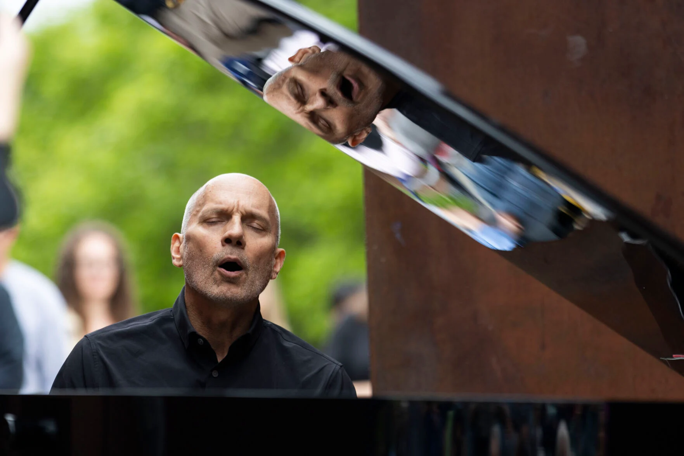
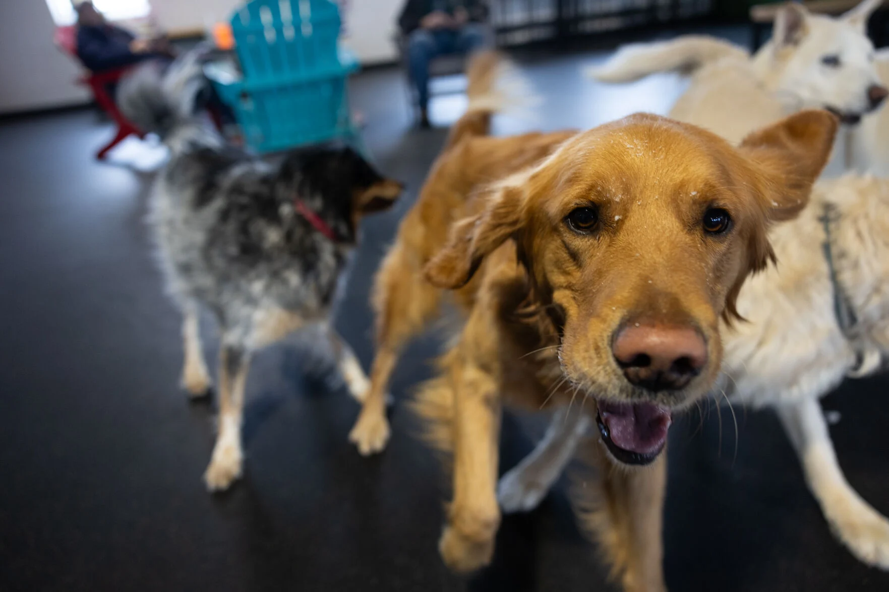
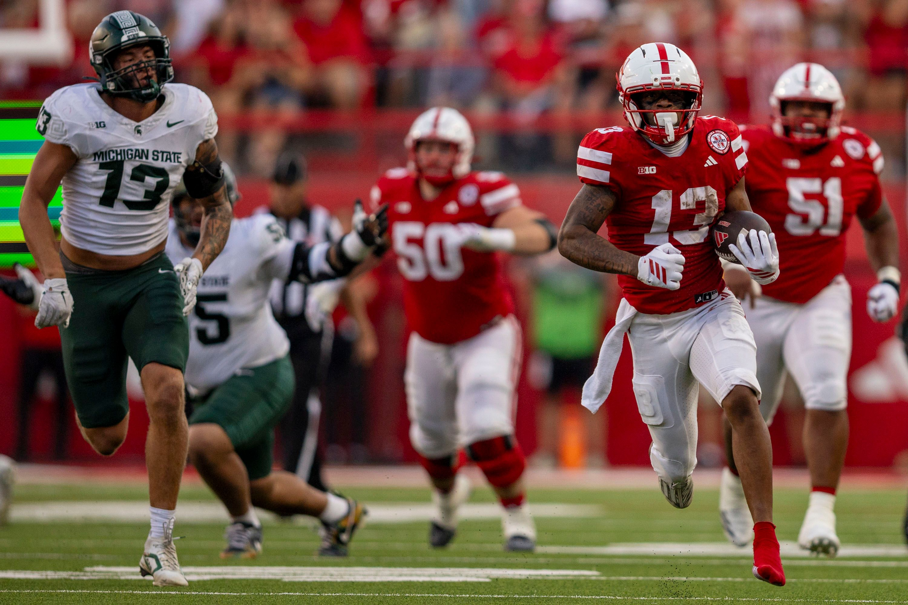
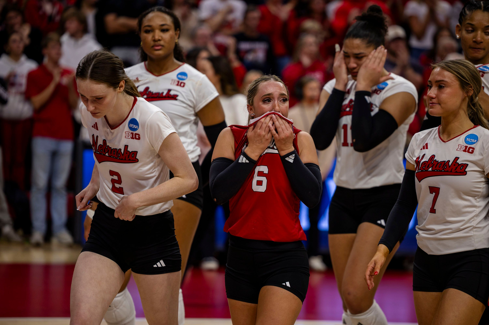
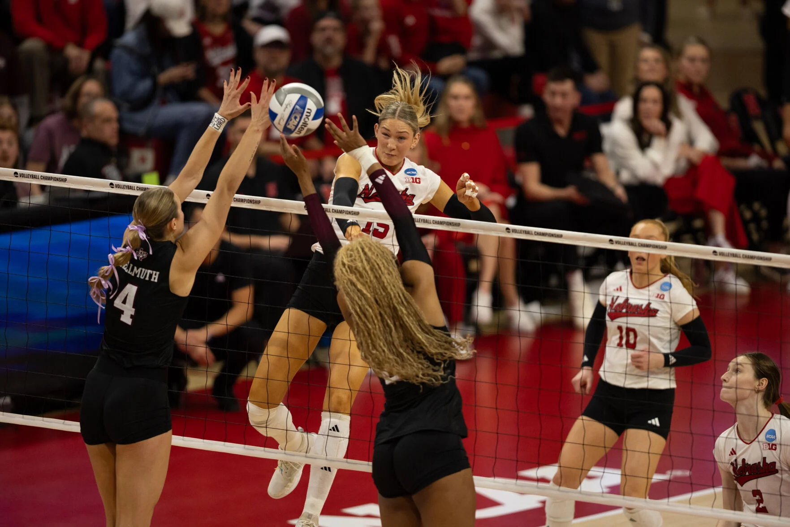
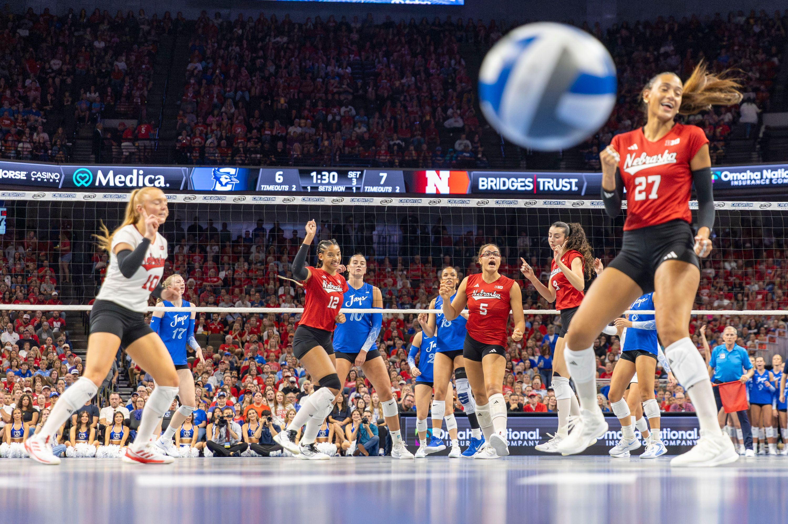
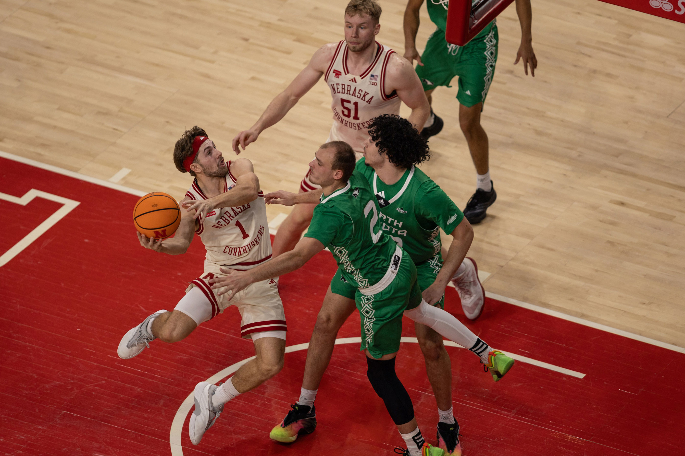
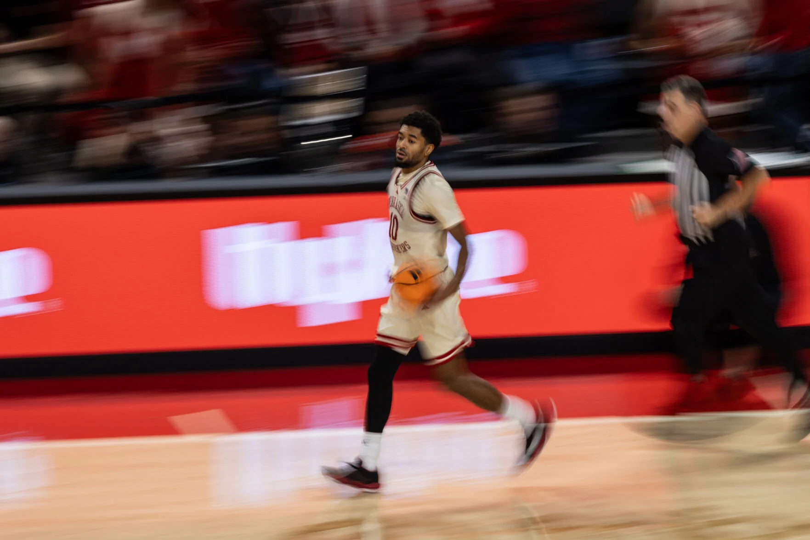
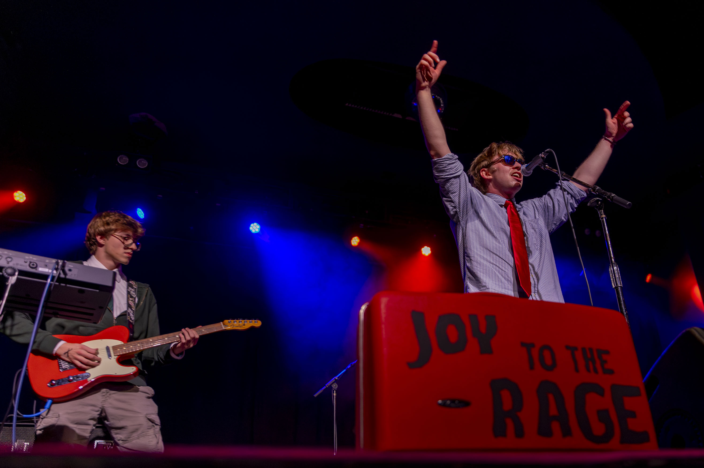

Justin Diep
Journalism, advertising and public relations, and broadcasting-media production triple major at the University of Nebraska-Lincoln
Journalism, advertising and public relations, and broadcasting-media production triple major at the University of Nebraska-Lincoln
I'm a journalist who covers accountability, from leaked university budget documents to federal immigration courts. I'm currently a news intern at the Omaha World-Herald, covering just about everything. I collaborated on comprehensive coverage of an ICE raid at an Omaha meatpacking plant and its aftermath, and was ranked among the top-viewed authors across Lee Enterprises' 77 daily newspapers in June 2025.
At UNL's campus newspaper, The Daily Nebraskan, I serve as assistant news editor and photographer. I lead coverage of the NU Board of Regents and university administration — including breaking stories on UNL's budget cuts using leaked internal documents. As a photographer, I've covered political rallies, concerts and Nebraska volleyball at the 2024 NCAA Final Four. I've been named Rookie of the Semester (fall 2023) and Greatest Contributor in both spring and fall 2025 by The Daily Nebraskan newsroom.
I also serve as a videographer for the College of Journalism and Mass Communications' Jacht Ad Agency, producing brand storytelling and marketing content for clients.
My earlier experience includes reporting internships at the Lincoln Journal Star, covering breaking news, police briefings and features, and Enterprise Media Group, where I was selected for UNL's Rural Nebraska Journalism Program to report across Washington, Burt and Cuming counties. I began my career as a marketing intern at E & A Consulting Group in Omaha.
I got my start in journalism at Omaha Bryan High School, where I was named the 2023 Nebraska High School Journalist of the Year.


A selection of moments captured across various beats, from Division I athletics to breaking news and community events.










Selected broadcast media and video journalism projects.
I assisted with filming an in-depth investigative reporting documentary led by Marissa Lindemann and Olivia Reed, and published by Nebraska News Service. Lindemann and Reed created the documentary for an in-depth reporting class on murdered and missing marginalized women. Specifically, I was brought on to help capture interviews and b-roll during their trip to Pine Ridge, South Dakota.
*The documentary received an Award of Excellence from the Broadcast Education Association On Location.
*Won a Student Production Award from the Heartland Region of The NATAS.
Another official music video project I worked on for Joyrager.
I'm always looking for new reporting opportunities and creative collaborations. Drop me a line below.